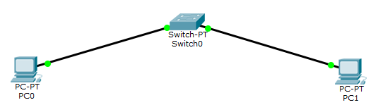

Лабораторная работа №1
ЭКОСИСТЕМА РАЗРАБОТКИ ПРОГРАММ С ОТКРЫТЫМ КОДОМ
Создание персональной страницы-отчета на GitHub и работа с git.
Задачи:
- Зарегистрироваться на GitHub. Страница пользователя
- Создать персональную веб страницу-отчет с использованием html, css, js. Персональная страница-отчет. Исходный код на index.html, style.css и demo.js.
- Загрузить персональную веб страницу-отчет в репозиторий ИДМ-17 по курсу "Интернет-технологии" на GitHub. Папка с исходными кодами в репозитории.
Лабораторная работа №2
РАЗРАБОТКА ПРОСТОГО ВЕБ-ПРИЛОЖЕНИЯ
Проектирование и разработка коллективного веб-приложения (SPA) с использованием HTML, CSS, JavaScript + JSON.
Открыть приложение (Клеточный автомат)
Требования к приложению:
- Приложение должно представлять из себя клеточный автомат, вариацию игры "Жизнь", но с несколькими видами клеток, каждый со своими уникальными правилами.
- Приложение должно обеспечивать динамическую загрузку файлов конфигураций в формате JSON с помощью асинхронных запросов в серверу.
- Приложение должно быть локализовано на русский и бирманский (мьянманский) языки.
Задачи:
- Собрать команду для разработки веб-приложения (SPA) и распределить роли. Страница команды.
- Сделать разметку страницы по макету. Макет страницы. Исходный код на index.html.
- Прописать стили страницы. Исходный код на CSS.
- Прописать JavaScript-функционал и реализовать возможность чтения JSON/XML. Исходный код на JavaScript и JSON (конфигурации, переводы).
Лабораторная работа №3
НАСТРОЙКА ЛОКАЛЬНОЙ СЕТИ ПЕРЕДАЧИ ДАННЫХ
Настройка коммутаторов и маршрутизаторов
Простейшая сеть из двух компьютеров и коммутатора:
Настройка большой сети:
Диапозоны подсетей
| Сеть | LAN A | LAN B | LAN C |
| Количество узлов | 1027 | 210 | 7 |
| Маска | /21 | /24 | /28 |
| Адрес подсети | 192.168.8.0 | 172.16.10.0 | 10.10.10.0 |
| Минимальный адрес | 192.168.8.1 | 172.16.10.1 | 10.10.10.1 |
| Максимальный адрес | 192.168.15.254 | 172.16.10.254 | 10.10.10.14 |
| Broadcast | 192.168.15.255 | 172.16.10.255 | 10.10.10.15 |
Адреса устройств
| Устройство | IP | Маска | Шлюз по умолчанию |
| PC0 | 192.168.15.254 | 255.255.248.0 | 192.168.8.1 |
| PC1 | 192.168.15.253 | 255.255.248.0 | 192.168.8.1 |
| PC2 | 172.16.10.254 | 255.255.255.0 | 172.16.10.1 |
| PC3 | 172.16.10.253 | 255.255.255.0 | 172.16.10.1 |
| PC4 | 10.10.10.14 | 255.255.255.240 | 10.10.10.1 |
| Router0 FE 0/0 | 15.15.10.1 | 255.255.255.252 | – |
| Router0 FE 1/0 | 192.168.8.1 | 255.255.248.0 | – |
| Router0 FE 2/0 | 172.16.10.1 | 255.255.255.0 | – |
| Router1 FE 0/0 | 15.15.10.2 | 255.255.255.252 | – |
| Router1 FE 1/0 | 10.10.10.1 | 255.255.255.240 | – |
Подготовка в экзамену
Самооценка прохождения теста по инновациям, формулировка одного вопроса по теме "Интернет-технологии" в одной из форм, встречающихся в тесте (выбор одного, выбор многих, упорядочивание, соответствие)
Простое приложение на JavaScript
Простое приложение на JavaScript с использованием ThreeJS.